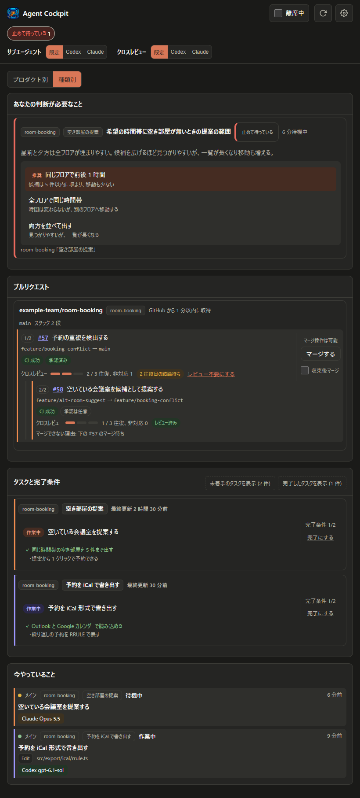
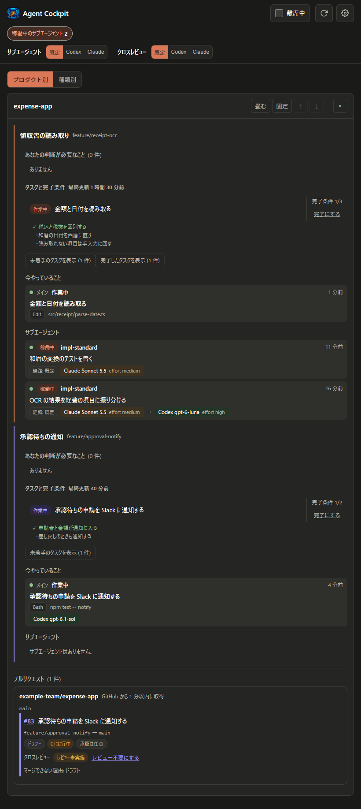

並行するエージェントを、
1 画面で見渡す。
Agent Cockpit は、並行して動く Claude Code と Codex のセッションを 1 つのダッシュボードにまとめます。どのセッションが何をしていて、どこで自分の判断を待っているかを、切り替えずに確かめられます。
手元の PC で動く常駐サーバーです。導入は Claude Code などの AI に任せます。
画面
判断待ち、PR、タスク、今やっていることを、すべてのセッションから集めて種類ごとに並べます。画像を押すと原寸で開きます。




待たせている場所が、すぐ分かる
セッションのフックと MCP ツールから状態を集めます。手で記録を付ける必要はありません。
Claude Code と Codex を一覧
作業中のツール、稼働中のサブエージェント、待機中かどうかを、Claude Code と Codex のセッションごとに表示します。
タスクと完了条件
メインセッションが登録した計画を、完了条件の達成状況と一緒に表示します。
判断待ちに画面から回答
質問や、推奨で仮に進めた判断を一覧にします。画面から回答すると、フックがセッションへ届けます。
席を外しても止めない
離席中にすると、質問は画面からの回答を決めた時間だけ待ち、締切を過ぎたら推奨で進めます。セッションには離席中であることを伝え、破壊的な操作をせずに作業を続けさせます。戻ったら、離席中に起きた変化を「前回見てから」で確かめられます。
積み上げた PR を順にマージ
セッションが作った PR を、CI とクロスレビューの状態と一緒にスタックの形で表示します。一番下の PR を画面で確認してマージできます。
サブエージェントの経路を切り替え
サブエージェントとクロスレビューを Codex と Claude のどちらで動かすかを、画面で切り替えます。
導入
導入は AI に任せます。手順書は GitHub にあり、AI が読みながら進めます。設定ファイルを変える前には、AI が変更の内容を示して確認を求めます。
Claude Code などの AI に、次のように頼んでください
agent-cockpit を導入して。手順は https://raw.githubusercontent.com/ktysne/agent-cockpit/main/docs/setup.md にある。
必要なもの
- Node.js 22 以上(外部パッケージは使いません)
- Claude Code。Codex(CLI、デスクトップ)は任意です。
あわせて使えるツール
- GitHub CLI、claude-codex-bridge、ai-cross-review を導入済みなら、PR の表示や経路の切り替えが加わります。詳しくは README の「連携できるツール」にあります。
導入できたかの確認
- 確かめる点は、README の「導入できたかの確認」にあります。